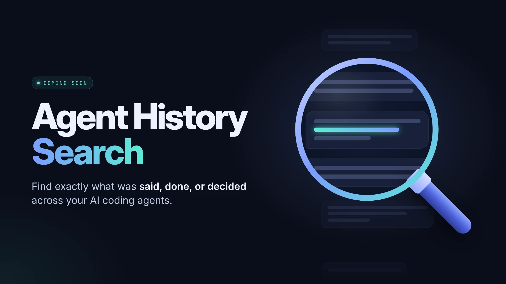

Contexto perdido
Se pregunta de nuevo lo ya decidido y se reconstruye a mano qué pasó en una sesión.
herramientas · agentes de ia
history_search es un helper de solo lectura que busca en las conversaciones anteriores con
agentes de código. El agente obtiene referencias exactas y responde con tu propio historial, no con suposiciones.
Disponible como MCP para Codex y Claude Code. Para OpenCode, Pi, omp y Pi Pocket, de momento se usa como helper: un script de Python que ejecuta el agente.

problema
Trabajo con varios agentes de código y cada uno guarda sus conversaciones en un formato distinto. Cuando una decisión quedó escrita en una sesión de hace días, encontrarla a mano significa abrir ficheros de sesión enormes o, peor, volver a explicarlo todo.
Un agente que no recuerda lo que ya se habló repite preguntas y rehace trabajo. history_search
le da una forma barata y verificable de consultar ese historial.
Se pregunta de nuevo lo ya decidido y se reconstruye a mano qué pasó en una sesión.
Una búsqueda devuelve entradas identificadas, que se amplían por ID sin cargar la conversación entera.
funcionamiento
El helper es un script de Python sin dependencias externas, cuentas ni acceso a red para buscar. El agente lo ejecuta y recibe JSON. El servidor MCP opcional (Codex y Claude Code) ejecuta ese mismo helper y devuelve el mismo JSON. Abajo, dos flujos reales sacados de mis propias sesiones (en inglés, abreviados).
Encuentra una frase literal en conversaciones pasadas, sin distinguir mayúsculas y con soporte Unicode.
Muestra las sesiones recientes y lee una por su ID exacto, opcionalmente alrededor de una entrada concreta.
Con --tool-calls devuelve comandos, argumentos y resultados, y marca fallos solo si el historial lo prueba.
search the history for what we said about the previous index
Short and casual, the way I really ask (originally in Spanish).
py -3 -B history_search.py search --host claude \ --store "$HOME\.claude\projects" \ --query "portfolio-anterior" --limit 1 --context 120
The host is its own agent’s history (claude). No other store is touched.
{
"status": "ok",
"route": { "host": "claude", "automatic_fallback": false, "mode": "text" },
"action": "search",
"results": [{
"session_id": "8c5b5472-a831-…",
"entry_id": "e5cc2c5a-7b56-…",
"role": "assistant",
"timestamp": "2026-10-25T12:15:09Z",
"text": "…saved as [portfolio-anterior.html]…",
"text_truncated": true
}],
"incomplete": false,
"scanned_rows": 6303
}
Abridged: paths shortened, some fields removed and the text translated. The text is cut on purpose, so nothing huge reaches the context.
py -3 -B history_search.py expand --host claude \ --store "$HOME\.claude\projects" \ --session 8c5b5472-a831-… \ --entry e5cc2c5a-7b56-… --context 400
Same IDs as in the previous output. It reads one message, not the whole conversation.
“The old index was archived as portfolio-anterior.html (with noindex) and the new one puts the tools first. That is from the session of 25 Oct, 12:15 UTC. The search was complete, so there is nothing missing from this source.”
search the history for what failed today
Also asked in Spanish, originally.
py -3 -B history_search.py search --host claude \ --store "$HOME\.claude\projects" \ --tool-calls --state failure --since 2026-10-25 --limit 1
--tool-calls searches commands and results instead of chat text. --state failure keeps only calls with recorded error evidence.
{
"route": { "host": "claude", "automatic_fallback": false, "mode": "tool_calls" },
"results": [{
"tool": "mcp__Claude_Browser__browser_batch",
"state": "failure",
"evidence": "is_error",
"arguments": { "text": "{\"actions\": [{\"input\": {\"url\": \"file:///…/index.html\"}, …" },
"result": { "text": "[navigate] opened file:///…/index.html in the preview pane (files outside the project folder render as static snapshots)…" },
"ref": { "entry_id": "aeefc421-4d82-…" },
"result_ref": { "entry_id": "88fe2b86-81eb-…" }
}],
"incomplete": true,
"notes": ["result_limit_reached"]
}
Abridged. Call and result are paired by call ID, never by proximity.
“A browser batch failed: opening the page as a local file only gave a static snapshot, so the next step (a screenshot) could not run. This is the first failure found, and the result says result_limit_reached, so there may be more. I can raise the limit if you want the full list.”
casos de uso
Describe lo que recuerdas: para qué servía una herramienta, una decisión pendiente, un error o un archivo que entregaste. El agente busca en los historiales que le hayas autorizado a leer y responde con referencias que puedes comprobar.
No necesitas recordar el nombre. Dale al agente pistas sobre lo que hacía y cuándo la usaste. Puede buscar esas pistas y leer los fragmentos de conversación relacionados para identificar la herramienta y recuperar la referencia original.
En el vídeo, esta búsqueda recupera SkillSpector. Puedes volver al contexto en el que apareció y comprobar por qué la elegiste, sin reconstruir la búsqueda desde cero.
Recupera el acuerdo que quedó en una conversación anterior: qué opción elegiste, qué alternativas descartaste y los motivos que dejaste escritos. Puedes acotar la búsqueda por tema o fecha, aunque no recuerdes la sesión exacta.
Sirve para continuar una implementación o explicar una decisión a otro agente. La respuesta se apoya en lo que consta en el historial y puede ampliar el mensaje original si necesitas más contexto.
Busca el mensaje de error o describe el síntoma para localizar la conversación donde lo resolviste. Si se guardaron las llamadas a herramientas, también puedes recuperar los comandos, sus argumentos y los resultados registrados.
Distingue los intentos fallidos del cambio que tuvo un resultado documentado. Así puedes revisar una solución anterior antes de probarla de nuevo; si el historial no confirma que funcionó, no debe presentarla como comprobada.
Busca por el proyecto, el contenido del documento o la fecha aproximada para recuperar el nombre y la ruta mencionados al entregarlo. También puede ayudarte a distinguir la versión final de los borradores cuando esa diferencia quedó registrada.
Recupera la referencia de la conversación, no el archivo en sí. Que una ruta aparezca en el historial no confirma que el archivo siga ahí ni que su contenido no haya cambiado.
Lee la conversación anterior para recuperar el objetivo, los avances y los pendientes que quedaron escritos. Es útil al abrir una sesión nueva o cuando quieres continuar desde otro agente sin volver a explicar todo el contexto.
Si el contexto está en otro agente, indica qué historial quieres consultar y autoriza su lectura. La búsqueda no cambia de fuente en silencio: tú eliges qué historiales puede leer.
instalación
Requisitos: Windows 10/11 (plataforma probada), Python 3.10 o superior con sqlite3. Sin paquetes pip ni cuentas. Guarda el repositorio en una carpeta estable antes de configurar tu agente.
Abre GitHub y usa Code → Download ZIP, o clona el repositorio. Extrae el paquete y abre tu agente con acceso a esa carpeta.
En PowerShell, desde la carpeta descargada, comprueba Python y ejecuta la ayuda y las pruebas offline. Estas pruebas no necesitan leer tus conversaciones. Si fallan, resuelve el error antes de continuar.
py -3 --version py -3 -c "import sqlite3; print(sqlite3.sqlite_version)" py -3 -B history_search.py --help py -3 -B -m unittest discover -s tests
Selecciona el agente desde el que lo usarás y qué historiales puede consultar. Las rutas siguientes son las habituales en Windows; comprueba las de tu instalación. Añadir una fuente al MCP permite consultarla, pero el agente solo debe usar otra fuente cuando se lo pidas explícitamente.
| Agente | --host | Ruta habitual |
|---|---|---|
| Claude Code | claude | $HOME/.claude/projects |
| Codex | codex | $HOME/.codex/sessions |
| Pi | pi | $HOME/.pi/agent/sessions |
| omp | omp | $HOME/.omp/agent/sessions |
| OpenCode | opencode | $HOME/.local/share/opencode/opencode.db |
| Pi Pocket | pocket | $HOME/.pi-pocket/pocket.sqlite |
Este ejemplo es para Claude Code. Ajusta host y store al agente y al historial elegidos. --plan valida los argumentos, pero no abre el historial ni demuestra que la ruta exista o se pueda leer.
py -3 -B history_search.py list --host claude --store "$HOME/.claude/projects" --plan
Copia este prompt y completa los campos entre corchetes. La instalación usará MCP en Codex y Claude Code; en los demás agentes, el script.
Configura Agent History Search en este equipo. Repositorio: https://github.com/alvaropas17/agent-history-search Carpeta del paquete: [RUTA ABSOLUTA] Agente que usaré: [codex / claude / opencode / pi / omp / pocket] Historiales que autorizo a leer: [FUENTES Y RUTAS] Lee el README y la documentación de instalación de la versión descargada. Comprueba Python 3.10+, sqlite3, la ayuda del CLI y las pruebas offline. Para Codex o Claude Code, configura el MCP incluido history_mcp.py con un host fijo y solo los historiales autorizados. Para el resto, configura el helper history_search.py y su skill o instrucciones locales. Antes de editar configuración, muestra los cambios propuestos y haz una copia de seguridad. No sustituyas archivos completos ni toques otros MCP. Si faltan rutas o autorizaciones, pregúntame. No cambies de fuente tras un error o un resultado vacío. No modifiques historiales ni borres WAL. Verifica la conexión real con una lectura mínima autorizada y dime cómo comprobarla en una sesión nueva. Si falta alguna prueba, indícalo.
Este ejemplo supone que has guardado el paquete en C:/Tools/agent-history-search. Ajusta la ruta si elegiste otra carpeta. Autoriza inicialmente solo el historial de Claude Code.
claude mcp add agent-history-search --scope user -- py -3 -B C:/Tools/agent-history-search/history_mcp.py --host claude
Añade este bloque a tu config.toml de Codex sin sustituir el archivo completo. Cambia YOUR_USER y la ruta del paquete por las tuyas; las rutas deben ser absolutas.
[mcp_servers.agent_history_search] command = "py" args = ["-3", "-B", "C:/Tools/agent-history-search/history_mcp.py", "--host", "codex", "--store", "codex=C:/Users/YOUR_USER/.codex/sessions"] startup_timeout_sec = 30
OpenCode, Pi, omp y Pi Pocket usan por ahora history_search.py junto con la skill o las instrucciones locales. Sigue la guía por agente para configurar las rutas de historial.
OpenCode y Pi Pocket: si la base de datos está abierta y tiene un archivo WAL, necesitas una copia consistente mediante la herramienta de snapshot incluida, o cerrar la aplicación y comprobar que ya no hay WAL. No borres el WAL.
Abre una sesión nueva y pide que liste tu conversación más reciente, indicando la fuente y el ID sin mostrar el contenido. Comprueba que llama a history_search del MCP, o al script si usas el helper. Después prueba una búsqueda con una palabra que sepas que existe.
Si configuraste MCP, una prueba con el script no demuestra que MCP funcione. Confirma una llamada real a la herramienta del servidor configurado. Si falla, revisa el error antes de cambiar de modalidad.
Guía completa y requisitos · Guía por agente · Prompt completo del repositorio
reglas
qué hace Nunca escribe, indexa ni migra tus historiales.
por qué Consultar el pasado no debe poder alterarlo.
qué hace Lee el agente en el que estás. Otro historial exige petición explícita (--source y --reason).
por qué Tras un error o un resultado vacío no salta a otro almacén ni afirma que algo no ocurrió.
qué hace Límites, ficheros omitidos y resultados parciales se declaran en incomplete y notes.
por qué Un vacío incompleto no es prueba de ausencia.
código abierto
Disponible como MCP para Codex y Claude Code. Para OpenCode, Pi, omp y Pi Pocket, de momento se usa como helper: un script de Python que ejecuta el agente.
Dale a tu agente el prompt de instalación del repositorio y elige qué historiales puede leer. Consulta GitHub para ver las instrucciones de cada modalidad.